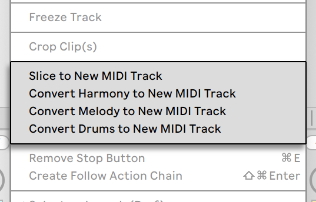
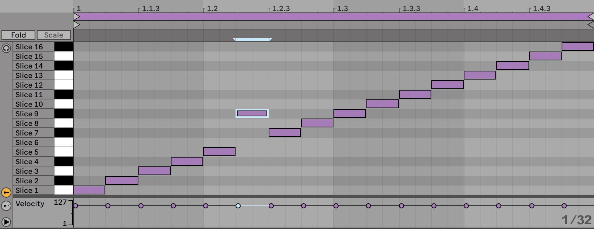
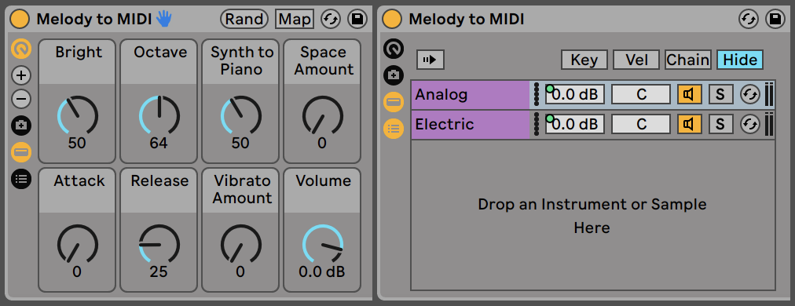

13. Converting Audio to MIDI
Although Live’s warping allows for audio files to be used much more flexibly than in traditional audio software, there are also a number of ways to extract musical information from audio clips and place it into MIDI clips, for additional creative possibilities.
When an audio clip is selected, four conversion commands are available in the Create Menu or the context menu for the clip.

13.1 Slice to New MIDI Track
This command divides the audio into chunks which are assigned to single MIDI notes. Slicing differs from the Convert commands below, in that it doesn’t analyze the musical context of your original audio. Instead, it simply splits the original audio into portions of time, regardless of the content. The Drum Rack provides an ideal environment for working with sliced files, and most of the setup happens automatically after you make a few choices:

When you select Slice to New MIDI track, you’ll be presented with a dialog box. This offers a list of slicing divisions, as well as a chooser to select the Slicing Preset. The top chooser allows you to slice at a variety of beat resolutions or according to the clip’s transients or Warp Markers. Since a Rack can contain a maximum of 128 chains, Live won’t let you proceed if your choice would result in more than 128 slices. You can fix this by either setting a lower slice resolution or by selecting a smaller region of the clip to slice.
The Slicing Preset chooser contains a few Ableton-supplied slicing templates, as well as any of your own that you may have placed in your User Library’s default presets folder.
With “Preserve warped timing” enabled, the clip will be sliced in such a way that timing alterations as a result of warping are preserved. With this option disabled, any changes that result from warping will not be reflected in the sliced clip; the sliced version will instead sound like the original, “raw” audio.
Once you’ve made your slicing choices and clicked OK, a number of things will happen:
- A new MIDI track will be created, containing a MIDI clip. The clip will contain one note for each slice, arranged in a chromatic sequence.
- A Drum Rack will be added to the newly created track, containing one chain per slice. Each chain will be triggered by one of the notes from the clip, and will contain a Simpler with the corresponding audio slice loaded.
- The Drum Rack’s Macro Controls will be pre-assigned to useful parameters for the Simplers, as determined by the settings in the selected slicing preset. In the factory Slicing presets, these include basic envelope controls and parameters to adjust the loop and crossfade properties of each slice. Adjusting one of the Macro Controls will adjust the mapped parameter in each Simpler simultaneously.
Note: Live will take a few moments to process all of this information.
Playing the MIDI clip will trigger each chain in the Drum Rack in order, according to the timing information that you specified or that was embedded in the audio. This opens up many new editing possibilities, including:
13.1.1 Resequencing Slices

By default, your sliced MIDI data will form a chromatically-ascending “staircase“ pattern in order to trigger the correct chains in their original order. But you can create new patterns by simply editing the MIDI notes. You can achieve a similar effect by dragging the Drum Rack’s pads onto each other to swap their note mappings.
13.1.2 Using Effects on Slices
Because each slice lives in its own chain in the Drum Rack, you can easily process individual slices with their own audio effects. To process several slices with the same set of effects, multi-select their chains in the Drum Rack’s chain list and press CtrlG (Win) / CmdG (Mac) to group them to their own nested Rack. Then insert the effects after this new sub-Rack.
For even more creative possibilities, try inserting MIDI effects before the Drum Rack. The Arpeggiator and Random devices can yield particularly interesting results.
Slicing is most commonly applied to drum loops, but there’s no reason to stop there. Experiment with slicing audio from different sources, such as voices and ambient textures. The same sorts of resequencing and reprocessing operations can be applied to anything you slice — sometimes with unexpected results.
13.2 Convert Harmony to New MIDI Track
This command identifies the pitches in a polyphonic audio recording and places them into a clip on a new MIDI track. The track comes preloaded with an Instrument Rack that plays a piano sound (which can, of course, be replaced by another instrument if you choose).
Note that this command, as with the other Convert commands, differs from slicing in that the generated MIDI clip does not play the original sound, but instead extracts the notes and uses them to play an entirely different sound.
The Convert Harmony command can work with music from your collection, but you can also get great results by generating MIDI from audio recordings of yourself playing harmonic instruments such as guitar or piano.
13.3 Convert Melody to New MIDI Track
This command identifies the pitches in monophonic audio and places them into a clip on a new MIDI track.
The track comes preloaded with an Instrument Rack that plays a synthesizer sound. Using the Rack’s “Synth to Piano” Macro Control, you can adjust the timbre of this sound between an analog-style synth and an electric piano. The instrument was designed to be versatile enough to provide a good preview, but can of course be replaced with another instrument if you choose.

The Convert Melody command can work with music from your collection, but also allows you to record yourself singing, whistling, or playing a solo instrument such as a guitar and use the recording to generate MIDI notes.
13.4 Convert Drums to New MIDI Track
This command extracts the rhythms from unpitched, percussive audio and places them into a clip on a new MIDI track. The command also attempts to identify kick, snare and hihat sounds and places them into the new clip so that they play the appropriate sounds in the preloaded Drum Rack.
As with the Convert Melody command, you can adjust the transient markers in the audio clip prior to conversion to determined where notes will be placed in the converted MIDI clip.
Convert Drums works well with recorded breakbeats, but also with your own recordings such as beatboxing or tapping on a surface.
13.5 Optimizing for Better Conversion Quality
The Convert commands can generate interesting results when used on pre-existing recordings from your collection, but also when used on your own recorded material. For example, you can record yourself singing, playing guitar, or even beatboxing and use the Convert commands to generate MIDI that you can use as a starting point for new music.
For the most accurate results, we recommend the following:
- Use music that has clear attacks. Notes that fade in or “swell” may not be detected by the conversion process.
- Work with recordings of isolated instruments. The Convert Drums command, for example, works best with unaccompanied drum breaks; if other instruments are present, their notes will be detected as well.
- Use uncompressed, high-quality audio files such as .wav or .aiff. Lossy data formats such as mp3 may result in unpredictable conversions, unless the recordings are at high bitrates.
Live uses the transient markers in the original audio clip to determine the divisions between notes in the converted MIDI clip. This means that you can “tune” the results of the conversion by adding, moving, or deleting transient markers in the audio clip before running any of the Convert commands.
Although each of the commands has been designed for a particular type of musical material, you can sometimes get very interesting results by applying the “wrong” command. For example, Convert Harmony will usually create chords. So running it on a monophonic clip (like a vocal recording) will often generate notes that weren’t present in the original audio. This can be a great way to spark your creativity.